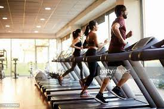

Outro fator importante para se começar na academia é fazer testes para seber se seu corpo ira aguentar,
logo os testes obrigatórios como o eletrocardiograma, hemograma completo, glicemia de jejum, ureia e
creatinina, lipidograma completo, ácido úrico, hepatograma, exame de urina e de fezes devem ser feitos
para segurança.
Se o paciente possuir mais de 60 anos, teste de esforço¸ ecocardiograma de estresse e cintilografia
também são essenciais.
Um problema muito comum para pessoas que começam na academia é o sedentarismo, O estagio da vida quando
o individuo não tem estimulo fisico e acaba estagnado em uma posição de dificuldade de locomoção e
esforço.Segundo estudos feitos por IBGE sedentarismo já afeta cerca de 47% dos brasileiros sendo uma das
grandes causas
para complicações em doenças. O sedentarismo tem sintomas como:
- Cansaço excessivo e constante;
- Aumento de peso.
- Fraqueza;
- Dor nas articulações;
- Má qualidade de sono;
- Nível 1: estágio em que a pessoa se movimenta, apenas não realiza exercícios de média intensidade. É considerado o menos grave;
- Nível 2: nesse caso, a pessoa faz, vez ou outra, algum tipo de atividade física. Não há frequência e é o caso mais comum;
- Nível 3: aqui, qualquer tipo de esforço físico é evitado. Por exemplo, a pessoa prefere ir de carro na padaria da esquina do que ir caminhando;
- Nível 4: o estágio mais grave. Nesse nível, a pessoa não faz nenhuma atividade física, optando por estar na maior parte do tempo deitada ou sentada.
Bateu aquela vontade louca de fazer exercícios, mas você não sabe exatamente se a coisa anda feia pro seu lado. Antes de pôr os músculos para trabalhar, queria convidar vocês, leitores, a fazer uma testa que mostra se você é, ou não, sedentário. O questionário abaixo foi feito pelo educador físico Bruno Gion, do Hospital Albert Einstein. É um teste simples e que leva em consideração vários quesitos: desde abordar a quantidade de atividades físicas (movimentos que gastam mais energia em relação ao repouso) que você faz, passando pelo cara que malha pra valer, até abordar aquelas questões sobre quanto tempo você fica paradão sem fazer nada.
Gente, ser sedentário é tenso. Não porque alguém esteja aqui atrás de músculos torneados e barriga tanquinho (isso não é a pegada desse espaço). Mas, simplesmente, porque se você não se mexer e cuidar da saúde, poderá desenvolver uma série de doenças. E ninguém quer isso, certo?
Questionario sedentarismo
A = 10
B = 7,5
C = 5
D = 2,5
Agora some seus pontos.
Pontuação Classificação
0 – 25 Sedentário
26 – 50 Pouco ativo
51 – 75 Ativo
76 – 100 Muito ativo
alem do mais é importante olhar seu imc para saber o treino adequado para maior eficacia em sua rotina então logo abaixo colocarei um site que calcula seu imc para te auxiliar.
Clique aqui para acessar a calculadora de imc da Ana Luiza info 1A
